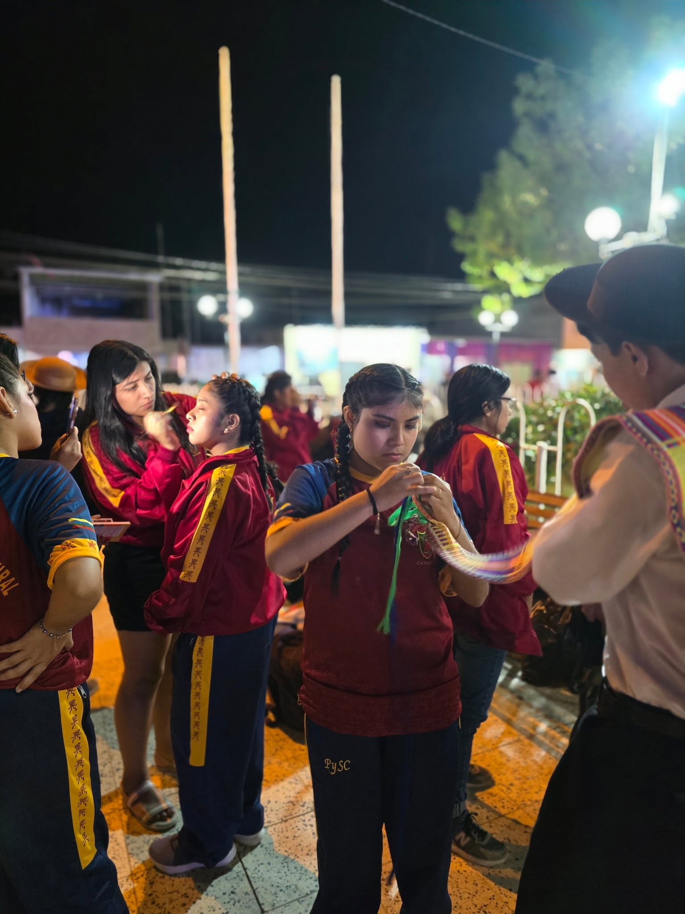
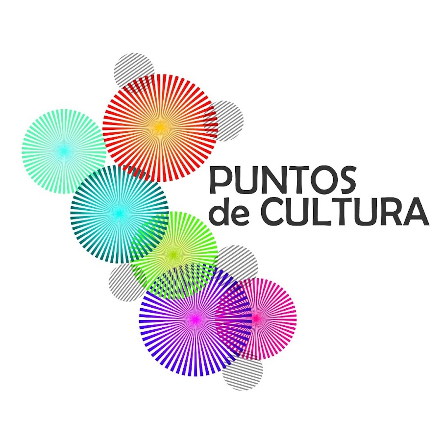
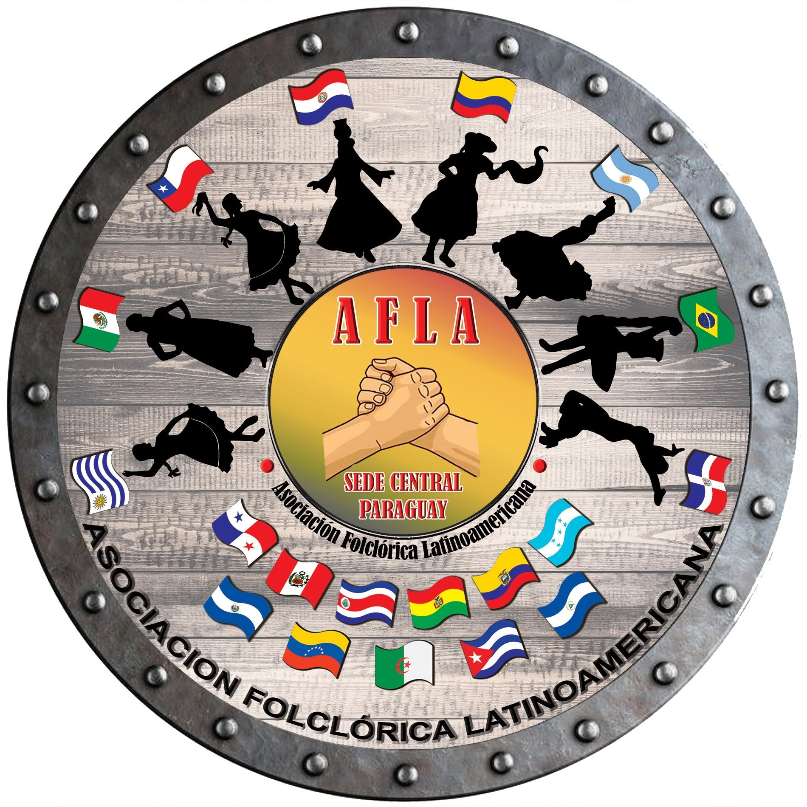
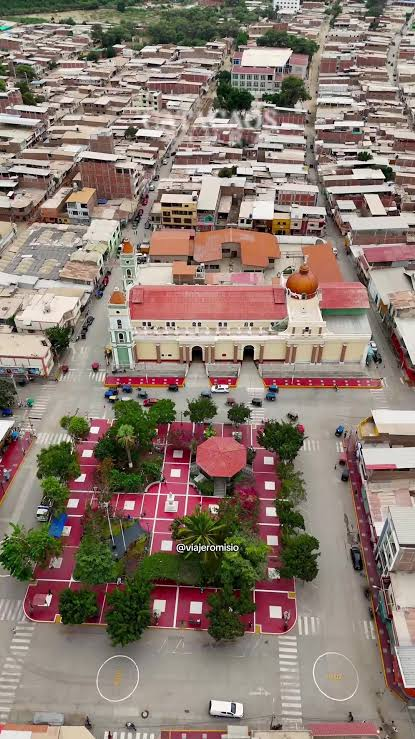

2009
Año de fundación
Desde 2009
Preservamos,
Preservamos,
difundimos y vivimos
el folklore peruano
Somos una agrupación cultural de Catacaos que promueve nuestras tradiciones a través de la danza, la formación y el amor por nuestra identidad.
17+
Años de trayectoria
3
Países visitados
2021
Punto de Cultura
🎉
🎂 Hoy estamos de fiesta
¡Feliz cumpleaños!
Con cariño, tu familia de Pasión y Sentimiento Cultural.
Agenda PySC
Lo próximo en nuestra familia cultural
Presentaciones, convocatorias, avisos y momentos especiales de Pasión y Sentimiento Cultural.
Actualizado desde nuestra agenda
Cargando agenda...

Desde 2009
Viviendo nuestra cultura
Nuestra esencia
Más que una agrupación, somos una gran familia
Preservamos, vivimos y compartimos la identidad cultural del Perú a través de la danza, la formación y el compromiso con nuestro folklore.
Desde Catacaos llevamos nuestro folklore peruano a nuevos escenarios y formamos generaciones que encuentran en el arte un motivo para sentirse orgullosas de sus raíces.
Pasión
Vivimos cada danza con entrega, disciplina y corazón.
Identidad
Preservamos y difundimos las tradiciones de nuestro Perú.
Comunidad
Apoyamos en la formación de personas, artistas y nuevas generaciones.
Nuestra historia continúa
Llevamos viviendo y compartiendo cultura
0
Años
0
Meses
0
Días
Lo que hacemos
Arte, formación
Arte, formación
y comunidad
Trabajamos por mantener vivas nuestras costumbres y crear espacios donde nuevas generaciones se formen con disciplina, pasión y valores.
Más sobre nosotros →01
Formación artística
Enseñamos danzas tradicionales a niños, jóvenes y adultos, fortaleciendo su identidad cultural.
02
Proyectos culturales
Desarrollamos iniciativas que conectan la danza, la identidad y la participación de artistas y de la comunidad.
03
Presentaciones
Representamos con orgullo la diversidad cultural del Perú dentro y fuera del país.

Quiénes somos
Una historia construida con pasión, identidad y comunidad
El Grupo Folklórico Pasión y Sentimiento Cultural nació en Catacaos en el año 2009 con el propósito de promover y preservar las manifestaciones culturales del Perú a través de la danza.
A lo largo de nuestra trayectoria hemos formado nuevas generaciones, desarrollado proyectos culturales y representado nuestra identidad dentro y fuera del país.
Conoce nuestra historia →
Reconocimientos
Compromiso reconocido con la cultura y la comunidad
Nuestra labor cultural ha permitido que Pasión y Sentimiento Cultural forme parte de espacios e iniciativas que promueven la protección, difusión y valoración de nuestras tradiciones.

Reconocimiento cultural
Punto de Cultura
Reconocidos por nuestra labor en favor de la participación, la identidad y el desarrollo cultural de la comunidad.
Desde 2021
Somos parte de
AFLA
Asociación Folclórica Latino Américana, una red dedicada al intercambio, fortalecimiento y difusión de las expresiones folclóricas en latinoamerica.
Los logotipos corresponden a reconocimientos, membresías o instituciones vinculadas a nuestra trayectoria cultural.
Nuestros proyectos
Ver todos los proyectos →
Cultura que transforma y conecta

Concurso nacional
Catacaos, Color y Tradición
Un espacio de encuentro para agrupaciones folclóricas, artistas y amantes de nuestras tradiciones.
Conocer proyecto →
Formación
Talleres de danza
Espacios de aprendizaje para niños, jóvenes y adultos.
Conocer proyecto →
Nuestra cultura sin fronteras
Hemos llevado nuestras tradiciones más allá de Catacaos
A través de la danza hemos representado nuestra identidad en distintos escenarios del Perú y en encuentros culturales internacionales.
Cargando mapa...
Catacaos
Piura · Perú
Selecciona un país destacado
Trayectoria nacional
Perú
Desde 2009
Hemos participado en actividades, concursos, festivales y presentaciones culturales en diferentes escenarios del país.
Nuestra historia comienza en Catacaos,
Piura.
Cada escenario es una oportunidad para compartir la riqueza cultural del Perú y llevar con orgullo el nombre de Catacaos.
Nuestra galería
Ver toda la galería →
Momentos que cuentan nuestra historia



Nuestra casa
Desde Catacaos compartimos la cultura peruana
Nuestro hogar se encuentra en Catacaos, distrito reconocido por su riqueza artesanal, gastronómica y cultural. Desde aquí nace nuestro compromiso por preservar y difundir las tradiciones del Perú.
-
Catacaos Piura · Perú
-
Punto de partida De nuestras actividades culturales
¿Quieres conocernos?
Contáctanos →
Estamos listos para compartir nuestra cultura contigo.
Si deseas integrarte al grupo, organizar una presentación o conocer más sobre nuestras actividades, estaremos encantados de conversar contigo.